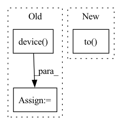

Pattern ID :15642

Before Change
def fit(self, adj, adj_label, attrs, args):
if args.device == "cuda":
device = torch.device(args.device)
adj = adj.to(device)
adj_label = adj_label.to(device)
attrs = attrs.to(device)
self.model = self.model.cuda()
After Change
Fitted estimator.
attrs, adj, edge_index, labels = self.process_graph(G)
self.model = AnomalyDAE_Base(in_node_dim = attrs.shape[1],
in_num_dim = attrs.shape[0],
embed_dim = self.embed_dim,
out_dim = self.out_dim,
dropout=self.dropout,
act=self.act).to(self.device)
optimizer = torch.optim.Adam(self.model.parameters(),
lr=self.lr,
In pattern: SUPERPATTERN
Frequency: 3
Non-data size: 3
Instances
Fragment ID: 52975835
Project Name: pygod-team/pygod
Commit Name: 98855068bf8301f1668ec8f950c74e45c85a8727
Time: 2022-03-13
Author: xueying.ding@vanderbilt.edu
File Name: pygod/models/anomalydae.py
M Class Name: AnomalyDAE
N Class Name: AnomalyDAE
M Method Name: fit(2)
N Method Name: fit(5)
M Parent Class: BaseDetector
N Parent Class: BaseDetector
M File Name: pygod/models/anomalydae.py
N File Name: pygod/models/anomalydae.py
M Start Line: 132
M End Line: 164
N Start Line: 271
N End Line: 323
'>
Before Change
def __init__(self, infer_size=384, open_kernel_size=3, dilate_kernel_size=3):
super().__init__()
device = torch.device("cpu")
model = load_jit_model(
INTERACTIVE_SEG_MODEL_URL, device, INTERACTIVE_SEG_MODEL_MD5
).eval()
self.predictor = ISPredictor(
After Change
)
logger.info(f"SegmentAnything model path: {model_path}")
self.predictor = SamPredictor(
sam_model_registry[model_name](checkpoint=model_path).to(device)
)
self.prev_img_md5 = None
def __call__(self, rgb_np_img, files, form):
'>
Fragment ID: 52975839
Project Name: sanster/lama-cleaner
Commit Name: a6aec566d963e67c17c0871dca1c89d26e1cdcaa
Time: 2023-04-06
Author: cwq1913@gmail.com
File Name: lama_cleaner/plugins/interactive_seg.py
M Class Name: InteractiveSeg
N Class Name: InteractiveSeg
M Method Name: __init__(3)
N Method Name: __init__(4)
M Parent Class: BasePlugin
N Parent Class: BasePlugin
M File Name: lama_cleaner/plugins/interactive_seg.py
N File Name: lama_cleaner/plugins/interactive_seg.py
M Start Line: 201
M End Line: 213
N Start Line: 31
N End Line: 41
'>
Before Change
// sample = self.samples[:,self.last_added_ind-1]
// diff = x - sample
// dist_to_last_added = LA.norm(diff)
device = torch.device("cuda" if torch.cuda.is_available() else "cpu")
sample = self.samples[:,self.last_added_ind-1]
sample_gpu = torch.from_numpy(sample).to(device=device)
x_gpu = torch.from_numpy(x).to(device=device)
After Change
self.n = 1
self.last_added_ind = 1
self.distances[0,0] = 0
self.samples = torch.zeros(len(x),self.max_size).to(device=device)
self.samples[:,0] = x[:,0]
self.data[0] = x_data
computed = 0
'>
Fragment ID: 52975841
Project Name: sun-umn/pygranso
Commit Name: d4f37a8674053b048d1815c4b23a8ddafc82d8f3
Time: 2021-09-09
Author: 52502144+Buyun-Liang@users.noreply.github.com
File Name: private/neighborhoodCache.py
M Class Name: nC
N Class Name: nC
M Method Name: getCachedNeighborhoodAbout(3)
N Method Name: getCachedNeighborhoodAbout(3)
M Parent Class:
N Parent Class:
M File Name: private/neighborhoodCache.py
N File Name: private/neighborhoodCache.py
M Start Line: 38
M End Line: 48
N Start Line: 40
N End Line: 40